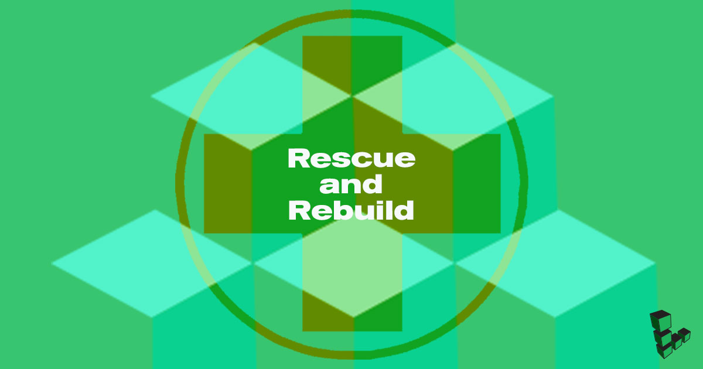

Rescue and Rebuild
Updated by Linode Written by Linode

Even the best system administrators may need to deal with unplanned events in the operation of their services. The Linode Cloud Manager provides recovery tools that you can leverage if you are having trouble connecting to one of your Linodes, and this guide describes those tools:
You can boot your Linode into Rescue Mode to perform system recovery tasks and transfer data off your disks, if necessary.
If you are unable to resolve your system’s issues, you can rebuild your Linode from a backup or start over with a fresh Linux distribution.
Troubleshooting Resources
While this guide outlines the recovery tools that Linode makes available to you, it does not provide a specific troubleshooting strategy. Our other guides offer a logical progression of steps you can follow when troubleshooting different symptoms:
If you are not able to establish basic network connections with your Linode, we recommend that you review the Troubleshooting Basic Connection Issues guide.
If you can ping your Linode but can’t access SSH, follow the Troubleshooting SSH guide.
If you can access SSH but are experiencing an outage with a web server or other service, review Troubleshooting Web Servers, Databases, and Other Services.
For an overview of all these issues and answers to other questions, check out the Troubleshooting Overview guide.
Rescuing
Rescue Mode is a safe environment for performing many system recovery and disk management tasks. Rescue Mode is based on the Finnix recovery distribution, a self-contained and bootable Linux distribution that you can mount your Linode’s disks from. You can also use Rescue Mode for tasks other than disaster recovery, such as:
Formatting disks to use different filesystems
Copying data between disks
Downloading files from a disk via SSH and SFTP
Rescue Mode Overview
To access Rescue Mode, you will need to reboot your Linode from the Linode Cloud Manager and then connect via Lish or SSH. After you connect, you can perform a check on your filesystem if you suspect that it is corrupted. If you need access to a certain software package to troubleshoot your system, you can install it.
Your disks will not be mounted by default, so mount them in order to access your files. Once you mount your primary filesystem, you can change root to have Rescue Mode emulate your normal Linux distribution.
Booting into Rescue Mode
To boot your Linode into Rescue Mode:
Log in to the Linode Cloud Manager.
Click on the Linodes link in the sidebar:
Select a Linode:
The Linode’s detail page will appear. Click on the Rescue tab:
In the Rescue form, select the disks you want to be mounted:
Note
Make a note of which devices your disks are assigned to (e.g./dev/sda,/dev/sdb, etc). For example, in the screenshot shown above, the Ubuntu disk corresponds to/dev/sda. These assignments will be where you can mount your disks from inside Rescue Mode.If you need to assign more than two disks to be accessible inside Rescue Mode, click the Add Disk option:
Note
You can assign up to 7 disks in Rescue Mode./dev/sdhis always assigned to the Finnix recovery distribution.Click the Submit button. The Linode will reboot into Rescue Mode, and a progress bar will appear. When this progress bar completes, proceed to Connecting to a Linode Running in Rescue Mode.
{kind=link}
{kind=link}
{kind=link}
{kind=link}
{kind=link}
{kind=link}
Connecting to a Linode Running in Rescue Mode
By default, Rescue Mode’s Finnix environment does not accept SSH connections. To access your Linode when it’s running in Rescue Mode, connect to it via the Lish console.
NoteIt is possible to enable SSH for Rescue Mode by manually starting the SSH daemon. Using SSH can provide a nicer experience and will allow you to copy files off of your server. Review the Starting SSH section for instructions. You will need to use Lish at least once in order to start SSH.
To connect with Lish:
From the Linode’s detail page, click the Launch Console button:
A new window will appear which displays your Lish console, a
Welcome to Finnix!message, and a root prompt:
{kind=link}
{kind=link}
Review the Using the Linode Shell (Lish) guide for further explanation of the Lish console and alternative methods for accessing it, including from your computer’s terminal application.
Starting SSH
The Finnix recovery distribution does not automatically start an SSH server, but you can enable one manually. This is useful if your Linode won’t boot and you need to copy files off of the disks. You can also copy entire disks over SSH. To start SSH:
Open the Lish console for your Linode.
Set the
rootpassword for the Finnix rescue environment by entering the following command:passwdNote
This root password is separate from the root password of the disk that you normally boot from. Setting the root password for Finnix will not affect the root account of your distribution.Enter the new password for the
rootuser.Start the SSH server:
service ssh start
You can now connect to the server as root with the SSH client on your computer. You can also access mounted disks with an SFTP client:
For instructions on connecting with an SFTP client, see the File Transfer reference manuals.
For instructions on copying an entire disk over SSH, see Copy a Disk Over SSH.
Performing a File System Check
You can use the fsck system utility (short for “file system check”) to check the consistency of filesystems and repair any damage detected. If you suspect that your Linode’s filesystem is corrupted, you should run fsck to check for and repair any damage:
Enter the
df -hcommand to verify that your primary disks are not currently mounted:root@ttyS0:~# df -h Filesystem Size Used Avail Use% Mounted on tmpfs 739M 1016K 738M 1% /media/ramdisk /dev/sdh 160M 160M 0 100% /media/sdh /dev/loop0 146M 146M 0 100% /media/compressed_root unionfs 739M 1016K 738M 1% / devtmpfs 10M 0 10M 0% /devYour primary disks should not appear in the list. In the example screenshot from the Booting into Rescue Mode section, we assigned the Ubuntu 18.04 disk to
/dev/sda. Because this device does not appear in the example output fromdf -h, we can run a filesystem check on it.Caution
Never runfsckon a mounted disk. Do not continue unless you’re sure that the target disk is unmounted.Run
fsckby entering the following command, replacing/dev/sdawith the location of the disk you want to check and repair:e2fsck -f /dev/sdaIf no problems are detected,
fsckwill display the tests it performed:e2fsck -f /dev/sda e2fsck 1.42.13 (17-May-2015) Pass 1: Checking inodes, blocks, and sizes Pass 2: Checking directory structure Pass 3: Checking directory connectivity Pass 4: Checking reference counts Pass 5: Checking group summary information /dev/sda: 109771/1568000 files (0.5% non-contiguous), 675014/6422528 blocksIf
fsckdetermines that there is a problem with your filesystem, it will prompt you to fix problems as they are found during each test:root@ttyS0:~# e2fsck -f /dev/sda e2fsck 1.42.13 (17-May-2015) ext2fs_check_desc: Corrupt group descriptor: bad block for block bitmap e2fsck: Group descriptors look bad... trying backup blocks... e2fsck: Bad magic number in super-block while using the backup blockse2fsck: gok Superblock has an invalid journal (inode 8). Clear<y>?Press enter to automatically attempt to fix the problems.
Once the filesystem check completes, any problems detected should be fixed. Try rebooting the Linode from the Cloud Manager. If
fsckfixed the issues, the Linode should boot normally.
Installing Packages
The Finnix recovery distribution is based on Debian, so you can use the apt package management system to install additional software packages in the temporary rescue environment. For example, you could install and run the htop utility by issuing the following commands:
apt update
apt install htop
htop
The software packages you install will be available as long as your Linode is running in Rescue Mode.
Mounting Disks
By default, your disks are not mounted when your Linode boots into Rescue Mode. However, you can manually mount a disk under Rescue Mode to perform system recovery and maintenance tasks. Run the mount command, replacing /dev/sda with the location of the disk you want to mount:
mount -o barrier=0 /dev/sda
Disks that contain a single filesystem will have mount points under /media in the rescue environment’s /etc/fstab file. To view the directories on the disk, enter the following command:
ls /media/sda
Now you can read and write to files on the mounted disk.
Change Root
Changing root is the process of changing your working root directory. When you change root (abbreviated as chroot) to your Linode root disk, you will be able to run commands as though you are logged into that system.
Chroot will allow you to change user passwords, remove/install packages, and do other system maintenance and recovery tasks in your Linode’s normal Linux environment.
Before you can use chroot, you need to mount your root disk with execute permissions:
mount -o exec,barrier=0 /dev/sdaNote
If you mounted your disk prior to reviewing this section, unmount the disk:
umount /dev/sdaThen, remount it with the
execoption.Then to create the chroot, you need to mount the temporary filesystems:
cd /media/sda mount -t proc proc proc/ mount -t sysfs sys sys/ mount -o bind /dev dev/ mount -t devpts pts dev/pts/Chroot to your disk:
chroot /media/sda /bin/bashTo exit the chroot and get back to Finnix type “exit” :
exit
Rebuilding
If you can’t rescue and resolve issues on an existing disk, you will likely need to rebuild your Linode. Rebuilding your Linode is the process of starting over with a set of known-good disks that you can boot from. There are a few different ways you can do this:
If you are subscribed to the Linode Backup Service, you can restore from an existing backup and return your Linode to a previous state.
If you aren’t subscribed to the Linode Backup Service, you can copy files off an existing disk and then use the Rebuild feature of the Cloud Manager to erase everything and start over again from scratch.
If you have a backup system other than the Linode Backup Service in place, you can rebuild your Linode and then restore your data from that backup service. The methods for restoring your data will vary by the kind of backup system that you use.
CautionDid an unauthorized intruder gain access to your Linode? Since it is virtually impossible to determine the full scope of an attacker’s reach into a compromised system, you should never continue using a compromised Linode.
We recommend that you follow the instructions in Recovering from a System Compromise. You’ll need to create a new Linode, copy your existing data from the old Linode to the new one, and then swap IP addresses.
Restoring from a Linode Backup
If you previously enabled the Linode Backup Service, you may be able to restore one of the backups to your Linode. Review the Restoring from a Backup section (specifically, the Restore to an Existing Linode section) of the The Linode Backup Service guide for instructions.
If you created backups with an application other than the Linode Backup Service, review the application’s instructions to restore a backup to your Linode.
Use the Rebuild Feature
The Linode Cloud Manager provides a Rebuild feature which will perform the following two actions:
Your current disks are removed.
A new set of disks is provisioned from one of the Cloud Manager’s built-in Linux images, or from one of your saved images.
Caution
If you use the Rebuild feature, the data from the disks that are deleted will not be retrievable.
If you’d like to deploy a new Linux distribution without erasing your existing disks, follow the instructions in the Creating a Disk with a Linux Distribution Installed section of the Disks and Configuration Profiles guide. This is a better option for those who need to create a new distribution, but also need to save their existing data.
Your Linode will need to have some amount of unallocated disk space in order to provision a new distribution. If your Linode does not have enough unallocated space, you can shrink your existing disks to free up space or resize your Linode to a higher resource tier.
If you need to copy files from your existing disk to another location before rebuilding, you can start SSH under Rescue Mode and then use an SFTP client to copy files to your computer.
To use the Rebuild feature:
If you need to copy files from your existing disk to another location before rebuilding, you can start SSH under Rescue Mode and then use an SFTP client to copy files to your computer, another server, or somewhere else.
Log in to the Linode Cloud Manager.
Click on the Linodes link in the sidebar:
Select a Linode:
The Linode’s detail page will appear. Click on the Rebuild tab:
Complete the Rebuild form. Select an image to deploy and enter a root password. Optionally, select one or more SSH keys (if you have not added any SSH Keys via the Cloud Manager, this option will not be available).
Click on the Rebuild button after completing the form:
A confirmation dialog will appear. Click the Rebuild button in the dialog to start the rebuild process:
You will be returned to the Summary tab for the Linode and a Rebuilding progress bar will appear. When the operation completes, your Linode will be booted under the new Linux image:
{kind=link}
{kind=link}
{kind=link}
{kind=link}
Join our Community
Find answers, ask questions, and help others.
The Linode Classic ManagerIf you're using the Linode Classic Manager instead of the new Cloud Manager, you can still view the Classic Manager version of this Rescue and Rebuild guide.
This guide is published under a CC BY-ND 4.0 license.